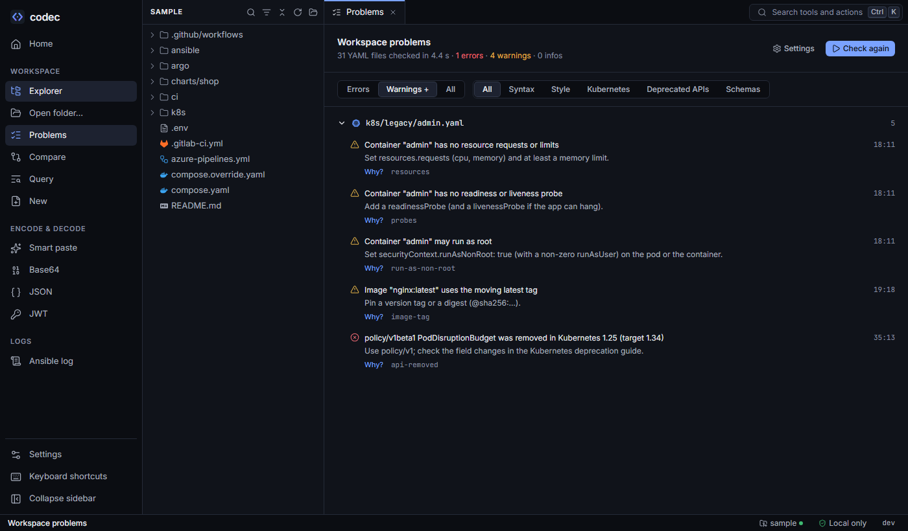

Lint and schemas
One set of checks runs everywhere: in the editor as you type, over the whole workspace, on Helm and Kustomize output, and in CI with codec yaml lint. Every finding says why it matters and how to fix it.

k8s/legacy/admin.yaml, each with its fix.Where checks run#
| Place | What it checks |
|---|---|
| Editor | The open file, including what-if edits, a moment after you stop typing. Squiggles, the Problems panel and the status bar count. |
| Problems view | Every YAML file in the folder, on demand ("Lint workspace" in the sidebar or palette). Filter by severity and by group; click to open the file at the line. |
| Helm and Kustomize | The rendered objects, traced back to the template or file that produced them. |
| CLI | codec yaml lint over files or folders, exit code 2 when there are warnings or errors — a CI gate. |
Each finding has a Why? link with the reason the rule exists, and Turn off to set the rule to off from where you see it.
Rules#
Every rule's level (error, warning, info or off) can be changed in Settings; the choice applies to the editor, the Problems view, rendered output and the CLI alike.
Style — YAML traps#
| Rule | Default | Why |
|---|---|---|
duplicate-key | error | Most tools silently keep only the last value, so the first one is ignored without a word. |
truthy | warning | YAML 1.1 readers (Kubernetes, Ansible, PyYAML) turn yes/no/on/off into booleans; YAML 1.2 readers keep them as text. The same file means different things to different tools. |
octal | warning | 0755 is octal (493) in YAML 1.1 but decimal in YAML 1.2. |
indent | info | Mixed indentation widths hide nesting; a line one space off silently moves to another parent. |
empty-value | info | A key with nothing after it is null — usually a forgotten or mis-indented value. Keys documented as empty (GitHub workflow_dispatch:, inventory hosts) are allowed. |
trailing-spaces | info | Noisy diffs, and inside | blocks the spaces become part of the value. |
document-start | off | For teams that require every file to start with ---. |
line-length | off | Long lines are hard to review. The limit (default 120) is set next to the rule; long words such as URLs are allowed. |
Kubernetes#
| Rule | Default | Why |
|---|---|---|
image-tag | warning | :latest or no tag moves: a restart can pull a different image than the one you tested, and a rollback can't go back. |
resources | warning | No requests: poor scheduling and first eviction. No memory limit: one container can starve the node. |
probes | warning | No readiness probe: traffic arrives before the app is ready, and a rolling update can't tell a broken release from a good one. |
privileged | warning | Every capability and host device: escaping to the node is trivial. |
host-path | warning | Exposes the node's filesystem and ties the pod to one node. |
host-network | warning | The pod sees all host traffic and bypasses NetworkPolicies. |
run-as-non-root | warning | Containers run as root unless told otherwise; the restricted Pod Security level rejects them. |
Deprecated and removed APIs#
Choose the Kubernetes version you deploy to (1.30 to 1.37; default 1.34). An API the target no longer serves is an error (api-removed) — kubectl apply and Helm would fail with "no matches for kind" — and one scheduled for removal is a warning (api-deprecated), naming the replacement.
apiVersion: policy/v1beta1 error: policy/v1beta1 PodDisruptionBudget was removed in Kubernetes 1.25 (target 1.34)
kind: PodDisruptionBudget fix: Use policy/v1; check the field changes in the deprecation guide.Schema validation#
Each document is checked against the published JSON schema for its type. Errors land on the offending key, with "did you mean" for misspelled fields:
spec:
replica: 3 error: Unknown field "replica" in spec Did you mean "replicas"?| Type | Schema source |
|---|---|
| Kubernetes | Per Kubernetes version and kind, from yannh/kubernetes-json-schema |
| CRDs | Argo, Argo CD, cert-manager and hundreds more from the datreeio/CRDs-catalog |
| GitHub Actions | SchemaStore workflow and action schemas |
| GitLab CI | GitLab's own CI schema |
| Azure Pipelines | Microsoft's service schema (scalars are compared loosely, as Azure converts them) |
| Compose | The Compose specification schema |
| Kustomize | SchemaStore kustomization schema |
The same schemas power key completion and field docs in the editor; a badge in the editor's toolbar names the schema in use.
Partial objects#
Files that a kustomization.yaml lists as patches (in the same folder or up to two above) hold partial objects, so they aren't flagged for the required fields of the complete object. Unknown fields and wrong types are still reported.
Downloads, cache and offline#
- Schemas are downloaded the first time a document needs them and cached in your user cache folder (
…/codec/schemas). Schemas a file needs start downloading together. - While a schema downloads, the editor shows the document as pending and asks again; Helm renders appear at once and add schema findings when they arrive.
- Offline (in Settings, or
--offlineon the CLI) never downloads: only the cache and your custom folder are used. - Custom schema folder: checked first. Put files there by name (
deployment-apps-v1.json) or in the CRD catalog layout (argoproj.io/workflow_v1alpha1.json) — useful for private CRDs or air-gapped machines. Copying codec's cache folder there also works. - Validate against schemas can be switched off entirely.
In CI#
codec yaml lint # the current folder, honouring .gitignore
codec yaml lint charts/ deploy/ --k8s-version 1.31
codec yaml lint . --offline --json # cached schemas only; machine-readable
deploy/api.yaml:6:3: error: Unknown field "replica" in spec [schema]
fix: Did you mean "replicas"?
12 files: 1 errors, 0 warnings, 2 infosExit status: 0 clean (infos allowed), 2 warnings or errors, 1 usage errors. Rule levels come from your settings file if there is one, so a shared settings file (via CODEC_CONFIG_DIR) gives CI the same rules as your editor.